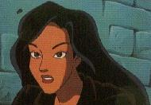

by Christine Morgan
Family Reunion Christine Morgan (vecna@eskimo.com) comments welcome Author's Note: This is a sequel to "Passions" and precedes "Sins of the Father." Mature readers only, please. Also, the usual disclaimers about how the Gargoyles characters belong to the folks at Disney.
"Elisa!" She turned toward the voice and saw her sister shouldering through the airport crowd, waving madly. "Beth!" Elisa called. She hurried to meet the younger woman. Beth flung her arms around Elisa, her tote bag swinging on its long strap and knocking Elisa off balance. "Oof!" Elisa gasped. "What have you got in there, rocks?" "Books," Beth said. "Finals coming up, and I want to ace calculus. How are you? I haven't seen you in forever. You look great!" "I feel great," Elisa said, smiling to herself. It was true, she did feel great. She had caught up on her sleep on the flight and felt alert, aware, and ready to face the relatives. Physically, her body ached pleasantly, and thinking about why made her tingle all over. Beth was watching her closely. Since they were kids, neigher she nor Derrek had ever been able to hide anything from Beth. Their father always said Beth too would make a great cop, her skill at reading people a definite edge. Putting delibrate weight on her words, Beth asked, "How is Goliath?" Elisa blushed. "Um, fine." "Just fine?" Beth pressed. "Hey, come on, what is this? Confession time at the old corrall?" "If you have something to confess. What are sisters for? Give, Elisa. Spit it out." "Beth, what do you expect me to say?" Beth tossed her head. "Oh, I don't know," she said loftily as she strolled toward baggage claim. "You could start by telling me how long you've been lovers." "What makes you think --" "Elisa. Really! I know you. I'd guess it was pretty recent, right?" "Last night," Elisa admitted. Beth's lovely dark eyes widened. "Last night was your first time?" "And our second time. And our third time." "Oh, my God!" Beth cried, drawing curious looks from around the terminal. "I want to hear everything!" "Beth!" Elisa protested. "We're not teenagers anymore. This isn't like the time I told you how I lost my virginity after the Homecoming dance!" "No, this is better! Is that your suitcase?" "Yeah. Here, I've got it. What are you doing here, anyway? Did Mom send you to meet me?" "Nope. My flight just got in. One of those tiny commuter flights. Cheap but scary. Mom and Dad are at the hotel. Everybody's staying at the Red Dune, a little place across from that big pyramid." "Pyramid. Great. I remember the last time I saw a pyramid." Elisa shivered, recalling the glasslike brittleness of aged bones, the dry withering of skin, the skittering of pulse. "I saw you get off your plane, so I figured we could share a cab. And guess what? We're even sharing a room! Just like the old days. So you can tell me everything. I want details, girl, details!" "You ... you don't think it's ... well, weird?" Beth shrugged. "If I hadn't met him first, I would never believe you. But I saw the way you looked at each other. And once I got used to him, I had to admit, he's actually pretty sexy." "Yeah. You don't think Mom and Dad suspect?" "Hard to say. When Aunt Agnes asked Mom if you had a boyfriend, Mom got a funny look." "Oh, not Aunt Agnes," Elisa moaned. "She used to scare the hell out of me." "She hasn't changed," Beth reported dryly. "She still wears those beads. You know, the ones that would swing out and smack us on the forehead when we were little and she leaned down to kiss us? And it's still 'Aunt' Agnes. Not 'Great-Aunt.' Russell made the mistake of calling her that and she almost let him have it with her handbag." "Well, if it comes down to a handbag duel, my money is on you and your calculus books." They stepped out into the dry desert heat and hailed a cab. By day, Las Vegas was dust-colored and tacky. Everything looked cheap and plastic, even the multi-million dollar casinos. Throngs gathered outside of places advertising bargain buffets or lobster for under ten bucks. Hardly any kids, despite the recent trend toward making Vegas family- friendly. Older folks with deep tans, pudgy white-kneed men in baggy shorts, a kaliedoscope of others, all wearing shades against the blazing Nevada sun. Beth was bubbling with questions and excitement. She leaned over and elbowed Elisa in the side, unable to contain herself. "I think it's so great!" she whispered. "Too bad you couldn't bring him." Looking up at the spires of the Excalibur, thinking it looked more like a big Lego castle than anything else, Elisa said, "If there's any city in America where they'd fit in, it's here." "Or New Orleans at Mardi Gras time," Beth added. "Can you just imagine the looks on everybody's faces if you walked in with Goliath?" "I can imagine, but I don't want to. I mean, we're here to celebrate our grandparents' anniversary, not send them and all their friends to the hospital with massive heart attacks. What is the plan, anyway? When's the big party?" "Thursday night. Their anniversary. Fifty years, wow. But Uncle Paul is planning other things to do, like going out to Lake Mead. And we'll have plenty of time to see the sights. Win some money, maybe, and pay off those student loans. Catch a few shows. I'd love to see Sigfried and Roy, but the tickets are eighty bucks each!" The cab passed the Luxor, a massive black pyramid which was the only building that looked right against the desert background. In front was an imitation of the Sphinx, flanked by statues and rows of swaying palm trees. The Egyptian effect was slightly ruined by the monorail connecting the pyramid to the castle next door, plus of course the acres of parking lots. "The light on top is the second brightest in the world," the cab driver pointed out. "It can be seen from space. And that statue there, the jackal, is --" "Anubis," Elisa said. "God of the dead. I know. We've met." The cabbie looked at her, started to say something, then decided he had a nut on his hands. He pulled up outside a boring L-shaped hotel with a neon sign picking out the letters "RED DUNE" and a blob shaped vaguely like a camel. They paid and got out. After checking in and straightening themselves up, they went to the suite at the end of the hall and were engulfed by family. * * Time in Las Vegas did not obey the laws of physics. At least, not in the casinos. In those jewellike caverns of light and noise, there were no clocks. No windows. The activity went on ceaselessly. There was no way to tell how late it was. It was deliberate, just like the layout of the buildings. Maybe all roads led to Rome, but in Vegas all halls led smack into the ranks of slots and blackjack tables. For who could pass through such a place without giving in to the temptation to plunk at least one quarter into the slot machine? Not many, and that was where Vegas made its money. The lights and bells were lures, fishing for dollars. Beth bit, enjoying herself hugely. She dragged Elisa from one fabulous hotel to the next, her excitement never dimming. Each hotel had stacks of plastic cups emblazoned with the logo, for the convenience of coin-carrying patrons. Beth decided to collect one cup from each place they visited, calling them free souveniers. Elisa herself was able to resist the urge. She had never been to Vegas before and was fascinated by the gaudiness and manipulativeness of it all. Caesar's Palace, with its enclosed shopping gallery that boasted a domed ceiling which changed colors like the sky and its tons of marble and statuary. The huge emerald leonine entrance to the MGM Grand. The pirate battle at Treasure Island. The aquarium at the Mirage, where for a couple of bucks visitors could see dolphins up close. She followed Beth and she enjoyed herself, but all the while she was wishing the others could be here to see this. What would they think, she wondered. What would gruff homebody Hudson make of the chaos and madness? Broadway would love the restaurants. Lexington would probably fixate on a slot machine, sure that he could time its rhythm to win the biggest payoff. Angela, Elisa guessed, would go for the roulette wheel, drawn by the glamour of it. Brooklyn would love the thrill rides behind the MGM Grand, not to mention the world's highest roller coaster. And Goliath ... Goliath she would take to the schmaltzy joust show at Excalibur, and the three-part adventure show at the Luxor. They could just be together, laugh, have fun, visit a new location for once without having to fight evil or get mixed up in Xanatos' plots. She jingled the gold-rimmed dollar coins in her pocket. The centers were glossy black, each with a different image in the center. Tut's mask, the Sphinx, Queen Nefertiti, and other images from Egyptian history and mythology. Her souveniers. Not free, but easier to handle than the stack of cups Beth was struggling to balance. Beth giggled. "If nothing else, they'll make great iced tea glasses. Or maybe planters. I could start an herb garden in my window, Elisa, what do you think?" "Sure," Elisa chuckled. "Or Jell-O molds." They were at the Mirage again, staring through the thick glass which enclosed the white tiger pen. The big cats lazed on the rocks, grooming or snoozing. Overhead, a video played continuously, showing cute cubs at play and the training of the older cats. In the gift shop across the hall, Beth held up a small stuffed panther. "Remind you of anyone? I think I'll buy it and send it to Maggie." "Xanatos' kid has a stuffed gargoyle," Elisa said. "Looks like a demented teddy bear with wings." "Can we stop in the casino for a while?" Beth suggested. "I feel lucky." "Go for it. Want anything to drink?" "Yeah. Pink lemonade with vodka." Elisa shuddered. "Why?" "It's good! Better if you throw it in a blender with ice. Makes a pink slushee." "I'll see what I can do." She snared a passing waitress, whose costume exaggerated a figure that made Elisa feel like a boy. Doing her best to be heard over the vocal crowd at the craps table, she explained Beth's drink. To her astonishment, the waitress said it would be no problem. A pair of obvious honeymooners went by, arms around each other, their happiness so visible it might have been written on them in neon. Elisa smiled, but it was tinged with sadness. That would never be her. She'd made her choice and didn't regret a thing, except that she'd never be able to show the world how much in love she was. She'd have to keep the greatest thing in her life a virtual secret. The waitress returned with Beth's slushee and Elisa's soda. After dropping a tip on the tray, she wound her way back to where she had last seen Beth. Beth was sitting on a stool, staring wide-eyed at the row of purple 7's on the machine in front of her. Bells rang, lights flashed, and coins cascaded into the metal bin. It sounded like Armageddon. To both sides, other slot players cheered in congratulations. Elisa tapped Beth's shoulder. "You won?" "Five hundred dollars!" Beth shrieked breathlessly. "I don't believe it!" "Here, let's get them in the cup before they start overflowing." Elisa started scooping. "Guess you were right. Lucky day." "Wow!" "You're buying dinner." "I'll do better than that! Want to go to the show tonight? Sigfried and Roy?" "I don't know," Elisa said. "There's been a lot of magic in my life lately." "Oh, come on, I don't want to go by myself!" "Okay, okay," she relented, laughing. "Anything to keep you from just plugging it all back in that machine!" * * "So," Beth said, flopping across her bed and propping her chin in her hands."Time to tell all." Elisa unwound the towel from her hair. "There isn't that much to tell ..." "Bull!" Beth declared. Elisa went to the window and looked out at the laser show going on at the front of the Luxor. How could she describe what had happened? Beth couldn't understand. Beth would have no frame of reference. How could she adequately say what it was like to feel his tail snaking around her hips, smooth yet leathery, full of coiled strength? It would sound freakish and weird, when it hadn't been at all. It had seemed like the most natural thing in the world. How could she explain that to her little sister? She closed her eyes and felt herself yearning back toward New York, as if by some gravitational pull. Her body still ached sweetly in rememberance. Once it had begun, once she had instigated and finally crossed the line that they had invisibly drawn, it had been perfect. She remembered him reclining on the makeshift bed she'd made. She remembered bending tenderly to him, feeling how he trembled in desire and anticipation. His hands, so large yet gentle, had found her breasts, and his tail curled around her leg, sliding up and down. She remembered releasing his belt and pulling away the rough wool of his loincloth. The size of him had been formidable as she'd suspected it would be, yet she felt no fear or hesitation. The shape of him, slightly different. How he had thrown his head back when she touched him, how his body had moved, how the sound low in his throat seemed to shiver through her bones and melt them. She remembered how he had carefully peeled away her underwear, and how she'd nearly come just from the warmth of his hand cupping her mound. And how he'd lifted himself to meet her, parting her slowly but firmly, and she'd eased down, almost unable to breathe, until they were fully locked together, her inner thighs against his hips, his tail encircling her waist, and she'd opened her eyes then to look at him and their eyes met, joined in every sense of the word. Completion, she'd thought. What began so long ago, now complete. And she had lain forward on his chest, feeling him shift within her, to rest her head below his chin. And he had raised his arms around her and then his wings, enfolding her, whispering her name and kissing her hair. She remembered how he had started to move, a slow rocking, and she had moved with him, pressure waxing and waning. And she came not in a single explosion but like the tide, a series of waves rolling in and cresting, each higher than the one before, washing over the beach that was her body. And she remembered feeling his every muscle tense, his jaw locked against a roar, his eyes blazing, tail and hands holding her to him, nearly withdrawing and then burying himself deep. She'd felt the contraction of his release and heard the shuddering cry that escaped between his gritted teeth. "Completion," she murmured now. "It was completion." "Complete what?" Beth demaned, bouncing eagerly on the bed. "Just completion," Elisa said. "There's no other way to describe it. I'm sorry, Beth." She grinned impishly. "Maybe if I fixed you up with a gargoyle, then you'd understand. Brooklyn's awfully cute." "Mom and Dad would just croak," she said. "I think they'd like at least one of their kids to stick to dating humans. Or maybe I should go for one of those elves you told me about. Then we'd have the whole set!" "Oh, sure, like I'm going to arrange a blind date between you and Puck," Elisa laughed. "I don't think so." "Well, that's o.k. I can find my own guys." Beth crawled into bed. "Get the lights, hunh?" Elisa cast the room into darkness and stretched out on her own bed. Somewhere in the darkness in another part of the world, was someone thinking of her and remembering? Remembering how they had lain side by side, unable to speak for fear of ruining what had just passed between them, words unnecessary anyway? Remembering how she had reached for him and found him ready again, and how they had spent the whole night exploring each other, until daybreak had drawn near? Remembering their farewell kiss just before the sun had claimed him? She suspected someone was. * * The Taylor clan did quite a respectable job of filling up the Red Dune's private ballroom. Russell, cousin to Elisa and Beth, had been in charge of organizing things. Since he was a stage manager for a moderately successful Seattle theater company, he rose admirably to the occasion. A huge banner proclaimed HAPPY GOLDEN ANNIVERSARY MARTHA AND JAMES. The napkins were stamped with the same sentiment. Each table boasted a centerpiece with a copy of a wedding photo surrounded by a spray of flowers. A tuzedoed band played swing tunes and Dixieland. The buffet table was nearly swaybacked from the weight of the food. Four or five people were going around with video cameras. Kids ran around, got underfoot, were goodnaturedly shooed away. It was, in other words, the typical family bash. Elisa made the rounds, saying hello to relatives she barely remembered, donning a polite expression whenever anybody launched into a story, trying not to wince whenever she overheard one of Aunt Agnes' remarks. Over dinner, various family members stood to share memories of the happy couple. Sometimes these were tearful, like the recounting of how their son Philip had been shot down over Vietnam. Other tales brought screams of laughter, like the time James fell into the Christmas tree at his brother Daniel's party. After dinner, the kids were marshalled into a bucket brigade of gift carriers. Packages were opened, exclaimed over, and obsessively noted down in The Book, a huge album which all the guests had signed like a yearbook. Elisa and Beth sat with their parents, doing their best to explain away Derrek's absence. Aunt Agnes of course sniffed down her long nose and remarked that Derrek used to be the level-headed one, neatly managing to insult all three Maza children with one blow. She then followed up by hinting that Peter had pushed the children too hard, and while it was nice that Beth wasn't going to be forced into becoming a cop, it was too bad she hadn't found a nice husband yet. And speaking of which, that made Elisa practically an old maid. And Derrek wasn't doing much to carry on the Maza name, now was he? "He has a girlfriend," Beth piped up at this point, earning warning looks from Elisa and her parents. "Oh? Is that why he's too busy to be here tonight? What's her name?" "Maggie," Diane Maza said. "She's a very nice girl. Derrek isn't here because he --" "Had to work," Elisa finished. "What's this girl's last name?" Aunt Agnes demanded. "Katt, I think," Beth said, then giggled into her champagne. "Hmph. Well. There must be something wrong with her, or else Derrek wouldn't have been ashamed to show his face." Having won the battle, at least in her mind, Aunt Agnes moved on to seek other victims. Before the evening was over, she would be back to chide Elisa about the dangers of police work, suggest to Diane that she should spend more time taking care of her family and less time traveling, and criticize Beth's use of makeup. "Sheesh. What a dragon lady," Beth said once Aunt Agnes and her killer handbag were safely out of earshot. "You should respect your elders, Beth," Peter Maza said as he got up to lead his wife to the dance floor. "The same way you'd respect a rattlesnake." Russell signaled for everybody's attention and four uniformed waiters rolled in a huge tiered wedding cake, liberally festooned with gold silk flowers, sugar doves, and gold-colored plastic bells. The band swung into a ragtime version of "The Wedding March" and amid cheers James and Martha were led to cut the cake. With paper plates and plastic forks, Elisa and Beth escaped to a relatively peaceful spot below one of the skylights. They could see the spotlight on top of the Luxor stabbing into deep space. The party really got going now. Suit coats were cast aside, ties were jerked askew. High heels were kicked under tables so that women could boogie in their nylons. Uncle Paul and Aunt Lucy, who regularly won swing dancing contests, were at the middle of a circle of finger-snapping, hip-swaying revelers. Beth, mildly tiddly on champagne by now, was sighing rapturously over one of their distant cousins and quizzing Elisa on how close was too close when it came to kinship. Elisa glanced up and saw a large winged shape silhouetted against the spotlight. "Goliath!" she called, and raced for the door. Her voice fell perfectly into the hush between band numbers. Peter Maza bolted out of his chair so fast it fell over with a clatter. Diane clapped a hand over her eyes and groaned. Beth faltered only for a moment. "Um ... Bible Tag!" she cried wildly. "Bathsheba! You're it!" She plunged after Elisa, seeing the startled stares turn to amusement as everybody figured that the Maza girls had gotten a bit too much of the bubbly. Elisa went up the stairs as fast as she could, with Beth right on her heels. The roof access door was at the top of another flight of stairs barricaded by a chain. Elisa hiked her skirt, hopped the chain, and kept right on going. She bashed through the door and into the warm Vegas night. Her eyes scanned the darkness, seeking, seeking ... there! But the shape was wrong. Large, yes. Winged, yes. But not Goliath, whose form she knew as well as her own. Not Goliath. Yet familiar. Beth, panting, came up beside her. "Man, oh, man," the shape chortled. "Bible Tag. That was priceless!" "Derrek!" the sisters chorused. He moved forward into a patch of light and held out his arms. Beth threw herself at him, hugging tight. Elisa did the same. He may have been Talon in New York, fearsome ruler of the Labyrinth, but to them he was always going to be their big brother, Derrek. "Bible Tag," he repeated, snickering. "I had to say something," Beth said. "Everybody was looking!" "It just burst out," Elisa said. "Well, next time, think before you bellow your lover's name to the rafters," Beth scolded. "Lover?" Derrek's ears literally perked up. "Hey, hey, sis!" Elisa flushed scarlet. "What are you doing here?" she asked to change the subject. "Planning to drop in and surprise everybody?" "Not even. I was in the area so I thought I'd take a look. See the family." "Why are you in Vegas?" Beth asked. "How'd you get here?" "We're on our way to California. Tracking Sevarius," Derrek said grimly. "You're gliding all the way to California? Derrek, that's crazy," Elisa announced. "I've got a private plane. Cessna. It's amazing how easy it is to get around some little airports. As long as you file your flight plan and pay, which you can do by phone with a credit card, they don't even have to see your face. We haven't had any trouble at all." "We?" Beth brightened. "Is Maggie here? I've got a present for her." "Uh, no." Derrek scratched and tugged at his ear the way he always did when he didn't know whether to be proud or embarrassed. "She stayed home. She's got pretty bad morning sickness." "Morning sickness!" Beth shrieked. "She's pregnant?!" "Oh, Derrek, that's great!" Elisa said. "Congratulations!" "It might be great," he warned. "We don't really know what to expect. That's why I want to find Sevarius. If anything is wrong with the baby, he's the only one that might know what to do." "You can't trust him!" Elisa gasped. "I know." Derrek's fists clenched in frustration. "But I can't just take Maggie to a hospital. Sevarius is going to have to play along, or I'll rip him open." "Elisa, isn't this exciting? We're going to be aunts!" Beth jumped up and kissed Derrek on the cheek. "So where's the rest of your clan? You didn't leave Maggie by herself, did you?" "No." He glanced uncomfortably at Elisa. "I brought Delilah with me." "Oh," Elisa said. "Who?" Beth asked. Elisa chewed her lip. "Delilah is ... well, she's kind of our sister, I guess. She's a clone." "A clone of you?" Beth's eyes were perfect circles. "Partly. Me, and a gargoyle named Demona." "She's really o.k.," Derrek said, patting Elisa's shoulder. "Thailog messed her up, but we've gotten her back on track." "I just wish I knew why!" Elisa snapped. "Why did Thailog have to throw my DNA into his stewpot? Why couldn't he just clone Demona?" "I can think of a couple of reasons," Derrek replied. "One -- to irritate Demona by suggesting he needed to improve upon her, especially because he knew how much she hated you. Two -- in case he ever needed to tempt Goliath, maybe he figured he'd have a better chance with a female that was part you. Since, I mean, come on, sis, everybody knew all along how it was with you two." "Was it really that obvious?" Elisa said. "Yeah," Beth and Derrek said in unison. "To us, at least," Derrek added. "So ... where is Delilah?" Elisa looked around the rooftop. "Maybe I should say hi." "She's catching the pirate show," Derrek said. "She didn't know if you'd want to see her." "I'd like to," Beth said. Elisa sighed. "I would to. It's not her fault that she is who she is. I've just been worried ... oh, I don't know." "That she _would_ tempt Goliath," Beth said wisely. Derrek shook his head. "Not a chance. She's scared to death of the whole clan. Maybe she might remind Goliath of you, but he reminds her of Thailog." "I thought she liked Thailog." Elisa frowned. "She never had a choice. We've been helping her come out of that. She's still having a hard time getting the hang of language, but she's way ahead of the others." "Let's meet her, Elisa," Beth pleaded. "It's our family reunion, after all, and in a weird way she's family." "She is part of my clan," Derrek reminded her. "And Goliath said we were all one big happy clan." "He nver said that!" Elisa chuckled. "O.K., not in so many words, but that's what he meant. Come on. I can carry you both. You wouldn't believe how easy gliding is out here. All that warm air trapped near the surface just pops right up at dusk. Plenty of updrafts." He scooped a sister into each arm. "We can't stay long, though," Beth said. "Pretty soon, somebody's going to wonder." "Aw, Mom and Dad can take care of it." Derrek took three running strides and sprang into the air. Elisa felt a pang of homesickness, wishing it was Goliath bearing her above the neon glimmer of Las Vegas. New York seemed a world away. She'd be back in a few days but it seemed like forever. Beth squealed delightedly, clinging to Derrek. "This is better than hang-gliding! Derrek, you're so lucky!" "Yeah, lucky, that's me," he said wryly. "Can't show my face in front of the family, kid's liable to be even worse off, but I'm lucky." "I'm sorry," Beth said. He squeezed them both. "Don't worry about it. Hey, there's the pirate ship!" Mock cannons boomed and thundered. Athletic young men in pirate garb swung from ropes. Others dressed as soldiers waved bayonets and muskets. Gouts of flame shot up. One of the ships was listing, going under in a mechanical marvel. And there, on the roof of Treasure Island, was a gargoyle. Derrek swooped down and released his cargo. Delilah turned, and when she saw them her eyes widened and her body tensed, as if she was about to flee. "Oh, wow," Beth breathed. "She's gorgeous!" "Thanks, I think." Elisa held out her hand. "Delilah?" "It's o.k.," Derrek said. "Elisa just wanted to talk to you." The she-gargoyle came forward, folding her wings. Fireglow turned her white hair golden. Elisa studied those features so like her own and remembered how Lex and the rest had reacted to their clones. But Delilah was not a degredation, a bad photo negative. She reminded Elisa of the night that she herself had been changed into a gargoyle. "Um, hi," Elisa said. "Hello," Delilah replied. "They sound the same!" Beth came closer, awed and thrilled. Delilah pranced backward like a skittish colt. Beth stopped. "It's all right. I'm Beth. I'm kind of your sister. Elisa, if you and Goliath had a daughter, I bet she'd grow up something like this. Darker, yeah, more purple like him, but wow!" "Beth, put a sock in it," Elisa said. "Let me talk to her." "Oh. Yeah, sure." Beth retreated to stand by Derrek. "This is kind of weird," Elisa said. "I mean, we don't even know each other, but we're sort of related." "Strange, yes," Delilah nodded. "Of you I made, you and Demona." "Yeah. Look, Delilah, I'm really sorry about the way everybody treated you guys. None of us reacted very well. When we first found out about Thailog, Goliath really wanted him to join the clan. He wanted to have Thailog as part of the family. It didn't work out. So, when you and the others came along, I guess we all expected you to be like Thailog." "No. Thailog was master, Thailog dead." "I wouldn't count on it," Derrek muttered. "Never think they're dead until you've seen the corpse." "And maybe we also expected you to be like Demona," Elisa continued. "But you're you. Not me, not Demona, not Thailog. You have a chance now to become whoever you want. I just want you to know, hey, no hard feelings." "No mad? No blame me?" "No." Elisa grinned. "Unless you're going to try and steal my fella, in which case I'll have to mess you up." "Fella? Oh. Goliath." Elisa rolled her eyes. "O.k., everybody does know. All this time I thought I was keeping it so well hidden ..." Delilah shook her head. "Goliath no. Not for me. Like Thailog, he, but not mean, but like Thailog, and is you he want. I alone. Not true gargoyle. Maybe learn, but now not true." Elisa touched her arm. "Just because you weren't hatched from an egg and raised in a clan doesn't make you any less a gargoyle." Delilah shrugged, clearly unconvinced. "Anyway," Elisa said, "I think we should at least be friends. What do you think?" "Is good." Delilah clasped her forearm. "Friends too few, is good have another." "Two," Beth said, extending her hand. "I want to be your friend." Delilah grasped it and the three of them stood in a triangle, smiling at each other while Derrek looked on with a pleased grin. * * The End
Click here to return to the previous page.
Family Reunion / Page Copyright 1996 - Tim Morgan / vecna@eskimo.com